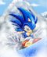

De: La Frikipedia, la enciclopedia extremadamente seria.
De: La Frikipedia, la enciclopedia extremadamente seria. De: La Frikipedia, la enciclopedia extremadamente seria.
|  | Este artículo tiene cosas que solo los garrotas y gamers entienden, así que si no pasas 48 horas diarias jugando, mejor busca otro artículo para leer |
«¡Voy a pintar la ciudad de rojo menstruacion!»
~ Peacock sobre sus tendencias gore
«¡NOOOOO!»
~ Soldado nazi de turno siendo usado de escudo por Parasoul
«¡FUERA DE MI CABEZA, CONCHETUMARE!»
~ Painwheel en pleno ataque de esquizofrenia
«¡Saquenme mi ruta, hijos de la chingada!»
~ Umbrella (no, no la corporación) perdiendo por milésima vez las encuestas para poner personajes jugables
«¡Patricia...!»
~ Bloody Marie teniendo un orgasmo
«¡Los demandaremos por derechos de autor!»
~ Los autores quejandose por los multiples plagios a Street Fighter, Evangelion, Touhou, BlazBlue, Vocaloid, El Exorcista, etc.....
Skullgirls es un cruce de Monster High con Street Fighter en el que puras hembras violentas se pelean a muerte (a poco) por un objeto trolleador que supuestamente cumple deseos.
En una parodia de Gringolandia, solo que con mafiosos y corruptos everywhere, quieren apoderarse del Skullheart, un ardefacto que aparece cada 7 años para concedir deseos a mujeres urgidas (nunca a hombres, porque la mujeres no piensan mucho, véase Puella Magi Madoka Magica). Sin embargo como el Skullheart es un puto trolleador, a cada hembra que concede el deseo, se transforma en una nueva Skullgirl, que es el equivalente a una bruja, como en Madoka Magica (si, segunda vez que lo menciono, solo que no pude resistir comparar tremendo plagio).
La nueva Skullgirl de turno es una sirvienta emo lesbiana que busca venganza contra los mafiosos más capos del barrio, o sea los Medici, de modo que las protas tendrán que ir a detenerla, cada una con su respectiva ruta, aunque al final se sabe que ningún final es canon y aparecen dos diosas jugando Skullgirls en una consola muertas de risa y trolleando a los espectadores, cual Bernkastel y Lambdadelta.

|
SPOILERS. |
Protagonista principal, la típica adolescente cachonda con amnesia que no recuerda ni tres carajos de su pasado. Su arma es una masa negra con tentáculos hentai que vive en su cabeza llamada Samson (si, ni yo me lo explico) con el que se monta orgias tentaculeras. Resulta que en verdad es amiga muuuy intima de la desfigurada de Painwheel (en ese tiempo una moeblob llamada Carol) y pariente de los Medici, la familia de mafiosos asesinos al que medio casting quiere matar y por eso la amnesia.
En su final tras ganarle a la sirvienta emo, y pedir el deseo al Skullheart, ella pide el deseo de salvar a su ex-novia desfigurada pues andaba más loca que la loli sanguinaria Peacock. Sin embargo, el Skullheart es un tremendo troll y la vuelve la nueva Skullgirl, pero por mientras puede tener momentos lésbicos con su ya-no-desfigurada novia Carol. También es conocida por su gran....retaguardia, hasta que llego la cantante culona de Squigly a quitarle el puesto.
«Y ahora la atraccion principal!»
~ Cerebella siendo puta presentándose
El estereotipo de la hermosa chica con un cuerpazo, pero con el coeficiente intelectual de un piojo, y eso que tiene el nombre que tiene. Ella trabaja en un circo burdel donde van puros pajeros a ver sus tetas y es la puta de su chulo Vitale. Su arma es un sombrero con manotas a lo Hulk llamado Vice-Versa. Solo pelea porque su chulo se lo ordeno, la tarada no sabe que ella trabaja para los malos mafiosos.
En su final tras ganarle a la sirvienta emo, y pedir el deseo al Skullheart, la tarada no pide nada, pues ya tiene a su chulo para eso. En eso llega la gata ladrona para quitarle el Skullheart, pero Cerebella usando su sombrero la deja más aplastada que una mosca. Al final se ve a la muy promiscua haciéndole favores a su chulo, pero esta depre porque recién se ha dado cuenta la estúpida de que ella trabaja para los malos del show.
«BANG! BANG! BANG!»
~ Peacock lanzando bombas como piromaniaca
Loli psicópata que anda vestida como caricatura Disney ochentera. Es muy fuerte y muy loca, le gusta gritar a los cuatro vientos que va a pintar la ciudad de rojo, mira Disney Channel, fuma porros y tiene tendencias piromaniacas. Cuando era chamaca, vivía en La Chingada se llamaba Putricia Patricia y perdió a sus viejos en la guerra, donde se la llevaron para hacer de esclava sepsual y tan degenerados eran los pederastas que se la tiraron que no se contentaron con reventarle el chocho, sino que también la dejaron sin brazos, piernas, ojos ni dientes. Tras ello fue rescatada por un viejo científico loco pederasta que la reconstruyo en una caricatura a lo Popeye. Después de que los malos se cargaran al viejo, la loli busca venganza y va atacando con sus bombas con caritas caricaturescas.
En su final tras ganarle a la sirvienta emo, descubre que es Marie, su ex-novia y compañera de prostíbulo. Después de esto, la loli vengadora va tras los malos mafiosos y no se sabe más de ella.
«Egrets, yo los elijo!»
~ Parasoul alucinándose una maestra Pokemon llamando a sus tropas
Tremendo hembrón que es la líder de un reino de tropas nazis (ojo, es francesa). Esta traumada porque hace 7 años su vieja se convirtió en la Skullgirl de turno y pidió el deseo de traer la paz mundial y el troll del Skullheart se lo concedió convirtiéndola en un monstruo asesino, pero al menos todos los países se aliaron para acabar con ella, o sea que si hubo paz de una forma u otra...puto Skullheart. Ataca con un paraguas piromaniaco llamado Krieg y con soldados nazi que ella usa de escudo, la muy puta. Tiene una hermanita loli y calientapollas llamada Umbrella que es la típica hermana fastidiosa.
En su final tras ganarle a la sirvienta emo, la tarada de su hermana loli se mete en medio porque le pareció ver a su mami (porque cuando su mama era la Skullgirl, estaba preñada de Umbrella) y la matan por tarada. De modo que Parasoul pide el deseo de salvar a su hermana y se vuelve la nueva Skullgirl.
«:33 < *ac observa a la gata ladrona en ese videojuego* :33 < *ac cree que la gata ladrona le ha robado su gatuno estilo!*»
~ Nepeta Leijon tras conocer a Nadia y ver que sus rimas con gatos tienen mas exito que en su propio comic
Una gata ladrona mexicana que trabajaba para una mafia de hombres-pez. Seee, ni yo me lo explico. En uno de sus actos de robo, por robarse una gema de la vida, los mafiosos Medici mataron a los mafiosos pez y a ella la descuartizaron, pero antes de eso ella se tragó por accidente la gema, volviéndola inmortal. De modo que busca venganza contra los mafiosos. Es media zombie por tragarse la puta gema y no importa cuando le den, la muy zorra revive (aunque eso no hace que se salve en el final de la tarada de Cerebella…) y hasta ataca con su cabeza muerdecojones, cual Sekibanki de Touhou.
En su final tras ganarle a la sirvienta emo, no pide ningún deseo y se va feliz a casa, hasta que descubre que los malos secuestraron a su novia puta pez, de modo que esta va por ella y no se sabe más.
«DEBO DESTRUIIIR!!»
~ Painwheel en pleno ataque de locura
Loca de patio desfigurada que pasa todo el día gritando que escucha voces en su cabeza. Originalmente era una colegiala caliente llamada Carol y muy amiga de la tentaculeadora Filia, hasta que un día la raptaron los del mercado negro y tras desfigurarla e inyectarle ADN de Skullgirl, la volvieron en una especie de Darth Vader psicópata y violento.
En su final tras ganarle a la sirvienta emo, no pide ningún deseo y vuelve a su casa como si nada, hasta que sus viejos no la reconocen al estar toda desfigurada y la ponen de patitas en la calle a la pobre. No se preocupen, le va mejor en el final de Filia.
Una enfermera caliente y algo emo que escapo de Silent Hill para irse a trabajar a una secta para evitar que las Skullgirls de turno manden el mundo a la Chingada, pero por alguna razon los traicionó y ahora sirve a la sirvienta emo, haciendo cosas como raptar tias en uniforme y convertirlas en monstruos esquizofrenicos, véase Painwheel. En el fondo es una de los buenos, solo sirve a la nueva Skullgirl para tener mas opciones de destruirla.
En su final tras ganarle a la sirvienta emo, no pide ningún deseo porque sabe que nada bueno saldria si revive a su secta, de modo que pide ser la nueva Skullgirl y desaparece sin mas.
Una monja rara que no tiene nada mejor que hacer mas que ayudar a la sirvienta emo porque si y hace confesiones,. En verdad no es una monja, sino una especie de Ctulhu con gore, tentáculos y todo eso. No solo eso, sino que es una trolleadora de mierda (como Kirei Kotomine), sirve a una secta mas mala que las demas que se ven en este juego y es quien entrega el Skullheart a pobres chicas idiotas para que pidan tonterías y se vuelvan Skullgirls, como en el caso de la mamá de Squigly años atrás.
En su final tras ganarle a la sirvienta emo, mata y absorbe a todas las demás hembras por losers.
«RAUUUUUUUUUUUUUUUUUUUUUUUGH!!! TE ENSEÑARE A QUE ME TROLLEES, PINCHE CULONA!»
~ Marie cuando se entero de que Squigly no es jugable hasta la version 0.2 de Skullgirls
La Skullgirl de turno y la sirvienta emo que ya mencionamos. Cuando era chamaca, vivía en La Chingada con su mejor amiga y amante Putricia Patricia, pero en eso hubo guerra y se las llevaron para hacer de esclavas sepsuales en un burdel. Después de traumatizarse al ver como los pederastas de mierda se tiraban y descuartizaban a su novia, se fuga y en eso encuentra el Skullheart, donde pide el deseo del vengarse de los pederastas y de los mafiosos Medici. Pero el tremendo troll la convierte en un monstruo y por eso el casting debe detenerla. Le cae mal Filia solo porque es una Medici, cree que Cerebella es una tarada y aun siente algo por su amada Putricia, alias la piromaniaca loli Peacock. En todos los finales siempre la matan y la hembra de turno o pide su deseo o no pide nada.
«Mira como esta ese culo, papá!»
~ Tu al ver a Squigly
O Sienna Contiello para los amigos y quienes se acuesten con ella. Antes venia de una familia de cantante de opera, hasta que la monja troll de Double le regala el Skullheart a la madre de Squigly y luego corre a contarle a los Medici que los cantantes de opera tienen el Skullheart (puta monja troll). Tras eso, los Medici se cagaron a balazos a su familia y la madre de Squigly se vuelve la nueva Skullgirl y pide el deseo de revivir a su familia, pero los revivieron como zombis a lo Thriller. Con ello, Squigly se convirtió en una zombi que solo revive cuando aparecen Skullgirls cada 7 años. Su arma es una serpiente falica de sin hueso llamado Leviathan, que es compadre de Samson y aprovecha para verle el culo a Squigly cada vez que ataca.
En su final, tras vencer a la sirvienta emo, aparece la monja troll contando que ella fue quien hizo que cagaran a balazos a su familia. En eso aparece la otra culona tentaculeadora (o sea Filia) y juntas se cargan a la monja. Con ello, Squigly y Leviathan vuelven a morirse para revivir en unos años mas cuando aparezca una nueva Skullgirl.
Autor(es):